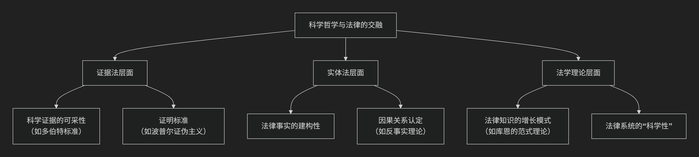

科学
科学哲学分支
一、什么是科学哲学？
科学哲学 是哲学的一个分支，它不研究具体的科学问题（比如水的分子式是什么），而是对科学本身进行批判性的反思。它追问的是科学活动的基础、方法和本质。
其核心问题包括：
划界问题：什么是科学？什么是非科学（如伪科学、形而上学）？区分它们的标准是什么？
科学解释的本质：一个解释如何才能算作是“科学”的解释？（例如，为什么“万有引力”解释苹果落地是科学的，而“上帝旨意”的解释则不是？）
科学理论的本质：科学理论（如进化论、相对论）是对世界真实的描述，还是仅仅是有用的预测工具？
科学知识的增长模式：科学是如何进步的？是通过知识的稳定累积，还是通过革命性的范式转换？
观察与理论的关系：我们的观察是否能做到完全客观、不受理论影响？
二、科学哲学的主要流派及其代表人物
科学哲学的思想并非铁板一块，它自身也经历了显著的演变。以下是几个最具影响力的流派：
逻辑实证主义
核心思想：强调 经验证实 是科学命题的意义所在。一个命题只有能被经验观察所证实或证伪的，才是有意义的科学命题。否则就是无意义的“形而上学”。他们致力于用逻辑来重构科学理论，使其精确化。
代表人物：
证伪主义
核心思想：由波普尔提出。他认为科学理论不能被最终“证实”，但可以被“证伪”。科学的标志不是可证实性，而是 可证伪性。即一个科学理论必须能提出可能被经验观察所推翻的、冒险的预测。科学通过“猜想与反驳”进步。
代表人物：
卡尔·波普尔 ：《科学发现的逻辑》、《猜想与反驳》。
历史主义
核心思想：批判逻辑实证主义和证伪主义将科学理想化、逻辑化，脱离了科学实践的真实历史。他们认为科学的发展并非线性积累，而是由“科学革命”推动的。在“常规科学”时期，科学家在一种“范式”下工作；当反常积累到一定程度，就会发生“范式转换”，新旧范式之间“不可通约”。
代表人物：
新实验主义与科学实在论/反实在论之争
核心思想：历史主义之后，科学哲学变得更加多元化。
代表人物：
三、科学哲学与法律的关系
科学哲学与法律的关系日益紧密，尤其是在“证据科学”和“法学理论”层面。下图清晰地展示了二者交叉融合的三个核心层面：

具体而言，两者的联系体现在以下方面：
证据法层面：科学证据的可采性
这是最直接的联系。法官不是科学家，如何判断一个证据（如DNA分析、指纹鉴定、复杂流行病学数据）是否是可靠的“科学”证据？
多伯特标准 ：美国最高法院的判决确立了下级法院审查科学证据可靠性的标准，这些标准直接源于科学哲学：
可检验性/可证伪性：该理论或技术能否被（且已被）检验？这直接来自波普尔。
同行评议与发表：该理论是否经过了同行评议并发表？
已知或潜在的错误率：该技术的误差率是多少？
普遍接受程度：该理论在相关科学界内被普遍接受的程度如何？
这个过程，本质上就是 在法庭上进行的“划界问题”实践。
实体法层面：因果关系认定
许多法律问题（尤其是侵权法和刑法）的核心是确定因果关系（如A的行为是否导致了B的损害）。
科学哲学中的 因果关系理论 为法律中的因果关系判断（如“若无则不”测试）提供了哲学基础。
法律中的因果关系认定，实际上是一种 在不确定条件下进行的、面向实践的推论过程，这与科学家在数据不完整时构建理论解释有相似之处。
法学理论层面：法律知识的本质
法律的“科学性”：法律能否被视为一门科学？法律推理（案例类比、法律解释）是更像逻辑演绎，还是更像库恩笔下的“在范式下解谜”？
法律知识的增长：法律是通过先例的稳定累积（像逻辑实证主义的累积观）进步，还是通过革命性的司法判决或立法（像库恩的范式转换）来发展？
四、总结
科学哲学为法律，特别是与科学证据相关的法律实践，提供了 至关重要的批判性思考工具。它帮助法律人更清醒地认识到科学知识的局限性、暂时性和建构性，从而更审慎地评估和运用科学证据，最终更公正地裁决案件。